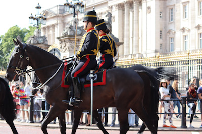
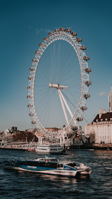
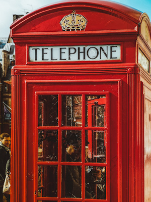

Le Musée Britannique reçoit actuellement plus de 5 millions de visiteurs par an,
ce qui fait de ce musée le troisième plus visité au monde,
derrière le Louvre à Paris et le Metropolitan Museum à New York.

Les Horse Guards
Les Horse Guards sont une formation de l'armée britannique.
Ils constituent la cavalerie de la Garde de la Maison du souverain
(Household Division ou Division de la Maison royale) : ensemble des régiments
de la Garde affectés à la protection de la famille royale au palais de Buckingham,
à Londres et au château de Windsor. Cette Garde royale comprend actuellement un régiment de cavalerie
(le Household Cavalry Regiment) et cinq régiments d’infanterie (les Foot Guards).

La grande roue:
Le London Eye (« L'œil de Londres »), également surnommé Millennium Wheel
(ou « Roue du millénaire »), est une grande roue mise en place à Londres pour
les festivités de l'an 2000, au même moment que le Dôme du millénaire de Greenwich.
Elle est l'une des attractions touristiques
d'Europe à avoir été distinguée par un Thea Award, décerné par la Themed Entertainment Association.

Cabine Téléphonique
La cabine téléphonique rouge (Red telephone box) est un mobilier
urbain mondialement connu et devenu, dans l'iconographie,
la caractéristique emblématique de Londres et
du Royaume-Uni, au même titre que Big Ben ou le Parlement.
La Red telephone box devient le symbole de la présence britannique dans le monde,
la couleur rouge étant celle de l'uniforme des armées du Royaume-Uni.